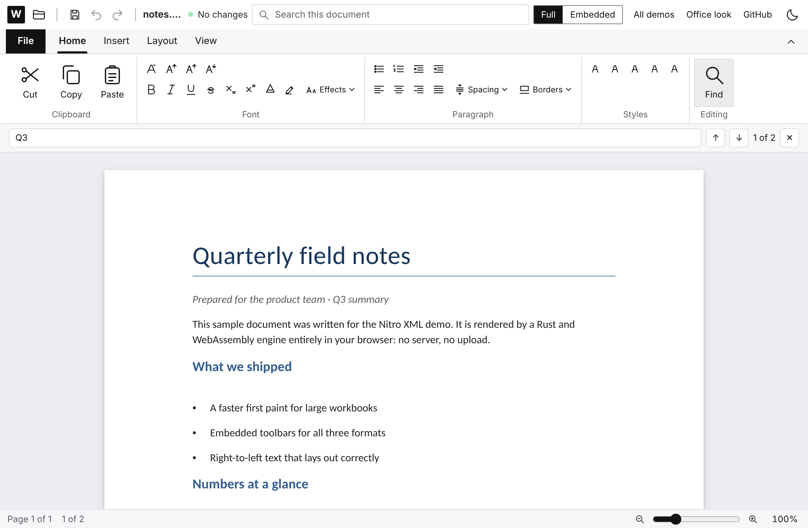

Find & Replace (Ctrl+H) in the find bar, for all three apps
Open issue #542 to vote
Approve: tap 👍 on the issue · Decline: tap 👎


Today: the find bar finds "Q3" (1 of 2) but there's no way to replace it.

Mockup: a Replace box with Replace, Replace all, Match case and Whole word, in the same find bar.
Tap an image to open it full size.
Why
Replace is one of the most-used editing commands in Word, Excel and PowerPoint. The Word engine already has Replace and Replace all inside it, but the find bar never shows them, and Excel and PowerPoint have no replace at all. This exposes it in one consistent bar with the Office shortcut, Ctrl+H.
EffortM Word ~1 day; Excel + PowerPoint 2–3 more
RiskLow–medium. Replace all must be one undo step and keep formatting when a match spans styled runs; in Excel it replaces cell text only, never formula text unless asked.
Perf / bundleThe find bar lives in the first-load loader, which has 0 B headroom, so the replace row must load lazily with each app's chunk. No first-load growth; a few KB per app chunk.
Definition of done
- Ctrl+H (and a Replace button next to Find) opens the find bar with a Replace row.
- Replace and Replace all work in Word body and tables, Excel cell values, and PowerPoint shape text; the bar says "Replaced N".
- Match case and Whole word toggles work; one Ctrl+Z undoes a whole Replace all.
- Saved files validate and reopen cleanly; eager loader budget unchanged; all required checks green.
Open issue #542 to vote
Approve: tap 👍 on the issue · Decline: tap 👎